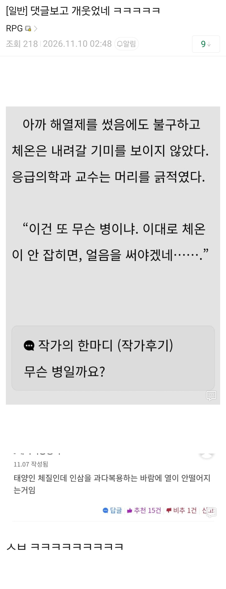

수상하게 의?학 지식 수준이 높은 독자 ㅋㅋㅋㅋ

수상하게 의?학 지식 수준이 높은 독자 ㅋㅋㅋㅋ
한 의학 논문
혈
드립이겠지 ㅋㅋㅋ
근데 진짜 해열제 복용해도 열이 안떨어지는거면
박테리아성 감염의심해봐야하나??
보통 영상매체에서 해열제 복용해도 열안떨어질때는
뇌가 맛가던가 감염이 어떻게 되어서 열이 안떨어지는거 밖에 못봤는데
대충 현직자 개붕이 소환글
면역체계에 이상이 생긴 것도 있긴 함
저거 소설 보는데 로이더들 쓰는 약? 그게 원인으로 기억
에페?
지금 해당회차 다시 보니 DNP 라던데 무슨 약인진 몰겠다
영양소를 atp로 안만들고 전부 열로 방출시키는데 삐끗하면 체온 40도 넘겨서 장기부전으로 죽음
ㄹㅈㄷ네
미친 진짜로 그런거 때려박는 애들은 몸뚱이가 그냥 과학상자네
저정도면 인삼이 아니라 홍삼같은데
홍삼은 오히려 열체질에 맞춰서 만든거라 인삼 산삼류일듯
내생각도 6년근 이상 뿌리부터 이파리까지 한번에 다 씹어먹어서 그럼 ㅇㅇ
한의학은 내공이 있던 시절엔 진짜 맞는 의학이었음. 자연지기를 잃어버린 현대인이기 때문에 한의학의 진가를 못 알아보는 것
아 무림인이셔?
허어....
허어....
통한의 비추1 ㅋㅋ
소설 댓글창에 당직 서는 레지던트가 몇 명 상주하는 듯 ㅋㅋ
아 근데 인삼먹고 시바 진짜 한 이틀 앓아누은적있는데
원리가 뭐냐. 내가원래 열이 엄청많긴함
인삼에 있는 사포닌같은 성분이 너랑 안맞나보지
말라리아?
열사병 아닐까
무림인이 개웃기네ㅋㅋ
태양인인지 소음인인지 그딴 건 모르지만...
한약 이상한 거 먹고 병난 사람은 많이 봤음
그래서 나는 한약은 절대 안먹기로 결심했지
한의학 논문은 대체 뭘까